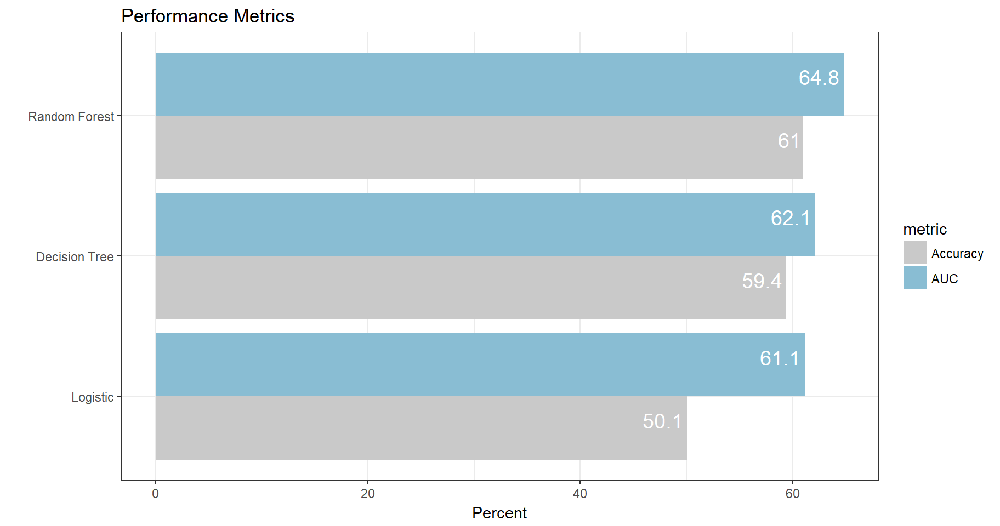
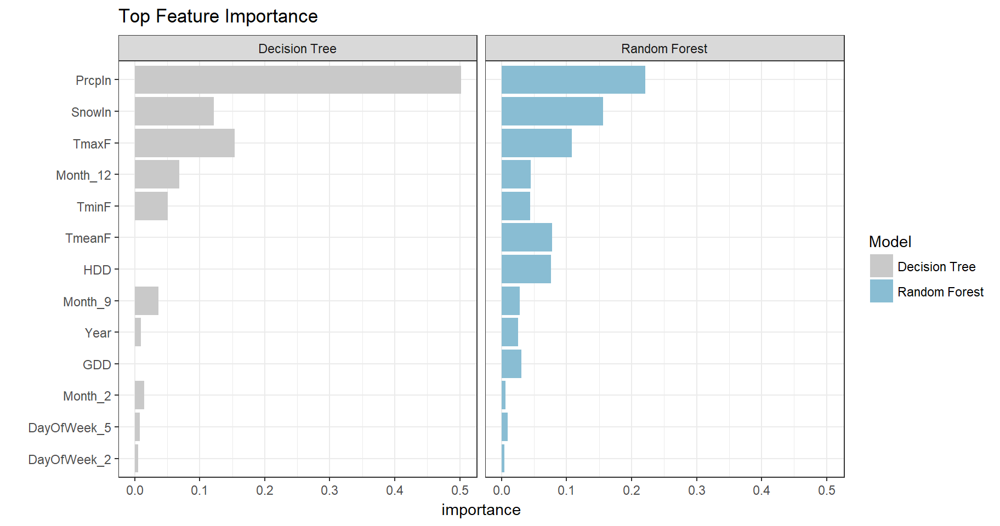

Follow on Github at: https://github.com/jenicholson/Presentations/blob/master/ KC17_sparklyr/Sparklyr_revealjs.Rmd
Different Deployment Modes for sparklyr
library(sparklyr)
versions <- spark_available_versions()
tail(versions)## spark hadoop install
## 37 2.1.1 2.7 spark_install(version = "2.1.1", hadoop_version = "2.7")
## 38 2.1.1 2.6 spark_install(version = "2.1.1", hadoop_version = "2.6")
## 39 2.1.1 2.4 spark_install(version = "2.1.1", hadoop_version = "2.4")
## 40 2.1.1 2.3 spark_install(version = "2.1.1", hadoop_version = "2.3")
## 41 2.2.0 2.7 spark_install(version = "2.2.0", hadoop_version = "2.7")
## 42 2.2.0 2.6 spark_install(version = "2.2.0", hadoop_version = "2.6")spark_install(version = "2.2.0", hadoop_version = "2.7")#library(sparklyr)
library(dplyr)
library(tidyr)
library(lubridate)
library(ggplot2)
sc <- spark_connect(master = "local")airlines_local <- read.csv(file =
"C:/Users/janae/Documents/RProj/datasets/airlines_all.05p.csv",
stringsAsFactors = FALSE) %>%
select(IsDepDelayed, Origin, Dest, UniqueCarrier,
Year, DayofMonth, DayOfWeek, Month, Distance)
weather_local <- read.csv(file =
"C:/Users/janae/Documents/RProj/datasets/Chicago_Ohare_International_Airport.csv",
stringsAsFactors = FALSE)weather_local <- weather_local %>%
mutate(Date = as.Date(Date, format = "%m/%d/%Y")) %>%
mutate(Year = year(Date),
Month = month(Date),
DayofMonth = day(Date)) %>%
select(-Date)
head(weather_local) ## TmaxF TminF TmeanF PrcpIn SnowIn CDD HDD GDD Year Month DayofMonth
## 1 41 25 33.0 0.31 0 0 32.0 0 2005 1 1
## 2 54 33 43.5 0.08 0 0 21.5 0 2005 1 2
## 3 36 32 34.0 0.36 0 0 31.0 0 2005 1 3
## 4 35 30 32.5 0.05 1.2 0 32.5 0 2005 1 4
## 5 31 26 28.5 0.38 6.2 0 36.5 0 2005 1 5
## 6 27 12 19.5 0.19 2.4 0 45.5 0 2005 1 6airlines_sdf <- sdf_copy_to(sc, airlines_local, "airlines_sdf",
overwrite = TRUE)
weather_sdf <- copy_to(sc, weather_local, "weather_sdf",
overwrite = TRUE)
head(weather_sdf)## # Source: lazy query [?? x 11]
## # Database: spark_connection
## TmaxF TminF TmeanF PrcpIn SnowIn CDD HDD GDD Year Month
## <int> <int> <dbl> <chr> <chr> <dbl> <dbl> <dbl> <dbl> <dbl>
## 1 41 25 33.0 0.31 0 0 32.0 0 2005 1
## 2 54 33 43.5 0.08 0 0 21.5 0 2005 1
## 3 36 32 34.0 0.36 0 0 31.0 0 2005 1
## 4 35 30 32.5 0.05 1.2 0 32.5 0 2005 1
## 5 31 26 28.5 0.38 6.2 0 36.5 0 2005 1
## 6 27 12 19.5 0.19 2.4 0 45.5 0 2005 1
## # ... with 1 more variables: DayofMonth <int>library(DBI)
dbGetQuery(sc, "USE my_db")
my_sdf <- tbl(sc, sql("select * from mytesthdfs"))dplyr: uses Spark SQLsdf_ functions: uses Scala Spark Dataframe APIdplyrohare_sdf <- airlines_sdf %>%
filter(Origin=="ORD" & Year >= 2005) %>%
left_join(weather_sdf, by = c("Year" = "Year",
"Month" = "Month",
"DayofMonth" = "DayofMonth")) %>%
mutate(IsDepDelayed = ifelse(IsDepDelayed == "YES", 1, 0),
DayOfWeek = as.character(DayOfWeek),
Month = as.character(Month),
PrcpIn = ifelse(is.na(PrcpIn) | PrcpIn == "T",
0, as.numeric(PrcpIn)),
SnowIn = ifelse(is.na(SnowIn) | SnowIn == "T",
0, as.numeric(SnowIn))) sdf_dim(na.omit(ohare_sdf))## * No rows dropped by 'na.omit' call## [1] 71741 17Some Other Useful sdf_ Functions
sdf_bind_rows() and sdf_bind_cols()sdf_copy_to()sdf_mutate()sdf_register()sdf_sample()sdf_separate_column()head(ohare_sdf)## # Source: lazy query [?? x 17]
## # Database: spark_connection
## Origin Dest UniqueCarrier Year DayofMonth Distance TmaxF TminF TmeanF
## <chr> <chr> <chr> <int> <int> <int> <int> <int> <dbl>
## 1 ORD BOS UA 2005 23 867 23 8 15.5
## 2 ORD SAT UA 2005 11 1041 36 30 33.0
## 3 ORD SAT UA 2005 31 1041 37 19 28.0
## 4 ORD BOS UA 2005 20 867 28 23 25.5
## 5 ORD DAY UA 2005 1 240 41 25 33.0
## 6 ORD MSP UA 2005 3 334 36 32 34.0
## # ... with 8 more variables: CDD <dbl>, HDD <dbl>, GDD <dbl>,
## # IsDepDelayed <dbl>, DayOfWeek <chr>, Month <chr>, PrcpIn <dbl>,
## # SnowIn <dbl>final_local <- collect(head(ohare_sdf, 10))
sdf_dim(na.omit(ohare_sdf))## * No rows dropped by 'na.omit' call## [1] 71741 17sdf_register(ohare_sdf, "ohare_sdf")## # Source: table<ohare_sdf> [?? x 17]
## # Database: spark_connection
## Origin Dest UniqueCarrier Year DayofMonth Distance TmaxF TminF TmeanF
## <chr> <chr> <chr> <int> <int> <int> <int> <int> <dbl>
## 1 ORD BOS UA 2005 23 867 23 8 15.5
## 2 ORD SAT UA 2005 11 1041 36 30 33.0
## 3 ORD SAT UA 2005 31 1041 37 19 28.0
## 4 ORD BOS UA 2005 20 867 28 23 25.5
## 5 ORD DAY UA 2005 1 240 41 25 33.0
## 6 ORD MSP UA 2005 3 334 36 32 34.0
## 7 ORD IAH UA 2005 10 925 35 29 32.0
## 8 ORD IAH UA 2005 30 925 35 25 30.0
## 9 ORD SLC UA 2005 8 1249 27 24 25.5
## 10 ORD SLC UA 2005 28 1249 27 2 14.5
## # ... with more rows, and 8 more variables: CDD <dbl>, HDD <dbl>,
## # GDD <dbl>, IsDepDelayed <dbl>, DayOfWeek <chr>, Month <chr>,
## # PrcpIn <dbl>, SnowIn <dbl>sparklyrprepared <- ml_prepare_features(ohare_sdf,
features = c("Dest", "UniqueCarrier",
"DayOfWeek", "Month"))## * No rows dropped by 'na.omit' callprepared <- prepared %>%
sdf_partition(training = 0.7, test = 0.2, validation = 0.1, seed = 101917)
train_sdf <- prepared$train
test_sdf <- prepared$test
validation_sdf <- prepared$validation
airY <- "IsDepDelayed"
airX <- c("Dest", "Year", "DayOfWeek", "Month",
"UniqueCarrier", "Distance",
"TmaxF", "TminF", "TmeanF", "PrcpIn", "SnowIn",
"CDD", "HDD", "GDD")reg_fit <- ml_logistic_regression(train_sdf,
response = airY,
features = airX)## * No rows dropped by 'na.omit' call#summary(reg_fit)
tree_fit <- ml_decision_tree(train_sdf,
response = airY,
features = airX,
impurity = "gini",
type = "classification")## * No rows dropped by 'na.omit' callrf_fit <- ml_random_forest(x = train_sdf,
response = airY,
features = airX,
impurity = "gini",
num.trees = 100,
type = "classification",
seed = 10432)## * No rows dropped by 'na.omit' callScore the Test Data and Get Results 

score_sdf <- sdf_predict(rf_fit, validation_sdf) %>%
sdf_separate_column("probability", list("P_Delayed" = 2)) %>%
select(IsDepDelayed, Dest, Year, DayOfWeek, Month,
UniqueCarrier, Distance, TmaxF, TminF, TmeanF,
PrcpIn, SnowIn, CDD, HDD, GDD, P_Delayed)
sdf_dim(score_sdf)## [1] 7225 16spark_disconnect(sc)OR
spark_disconnect_all()RStudio Website:
CRAN Documentation:
https://cran.r-project.org/web/packages/sparklyr/sparklyr.pdf
Yotabites: